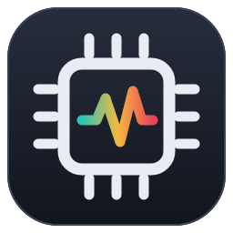
PC MonitorНагрузка, температуры и FPS твоего ПК — в своём окне, на рабочем столе, на панели задач и поверх игры.
Windows 10 и 11. Бесплатно и с открытым кодом. Обновления ставятся в один клик.
Новое: PC Monitor 2.0. Переписан с нуля — около 15 МБ памяти вместо 80+, полноценное окно с историей за 30 дней, отчёт о каждой игровой сессии, новый вид виджета и трея. 1.8 обновится сам и сохранит настройки. Все изменения
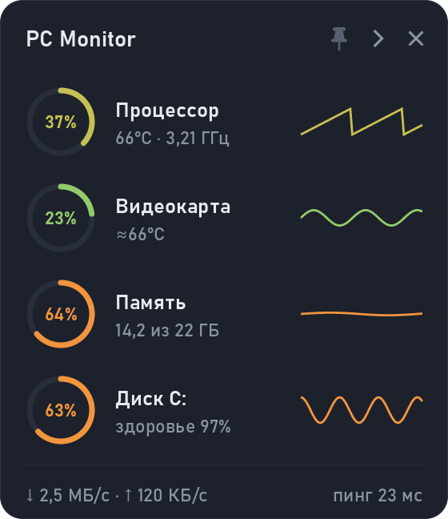
Процессор, видеокарта, память и диск одним взглядом, график нагрузки от минуты до суток, температуры и вентиляторы, сеть и пинг, самые прожорливые программы и игра, в которую ты играешь. Рядом: История за 30 дней, Игры, Процессы, Оборудование и Настройки — в светлой или тёмной теме. Закроешь окно — виджет, значки в трее и мини-панель продолжат работать.
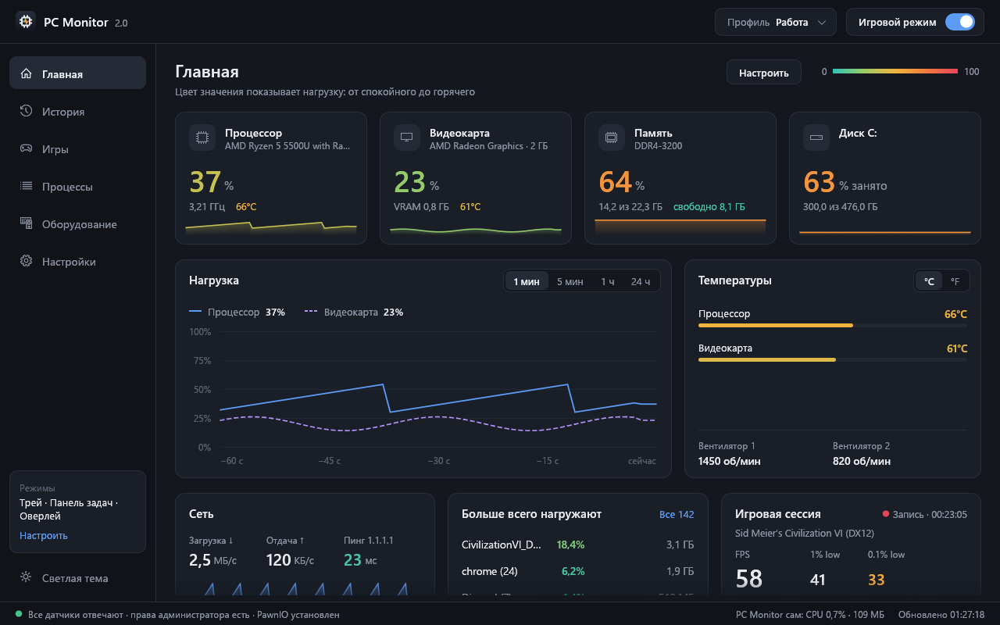
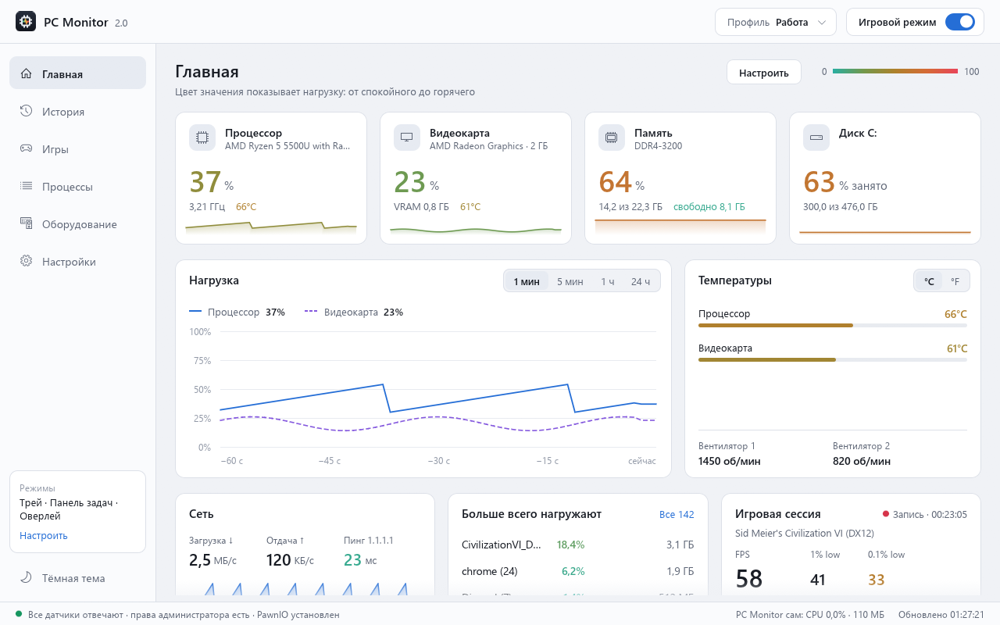
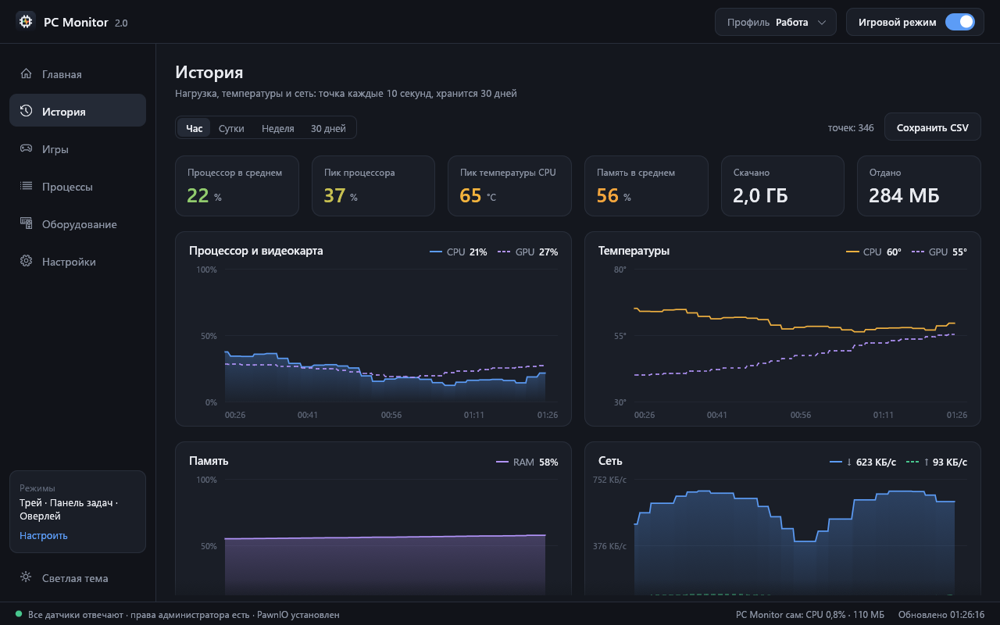
Включается в Настройках или клавишами Ctrl+Alt+W. Новый вид «Карточки», тёмный или светлый, или компактный список — или «Классический» виджет из 1.8 со всем, что в нём было (ниже).
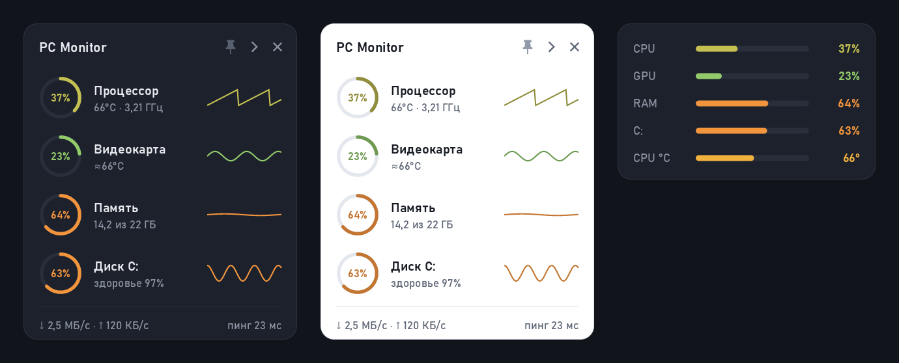
Каждое значение окрашено по одной шкале — от спокойного к горячему, так что красная цифра значит «посмотри сюда», что бы она ни измеряла. Классический виджет показывает всё сразу:
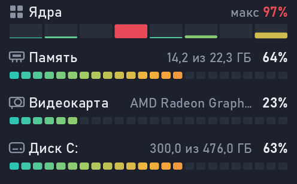
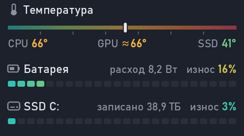
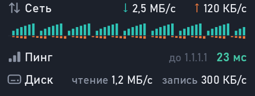
Тяни виджет за правый край, нижний край или угол. Выше — растут графики, шире — значения раскладываются в две или три колонки. Ctrl + колёсико мыши увеличивает или уменьшает всё вместе с текстом. Попробуй прямо здесь: потяни полоску на краю виджета.
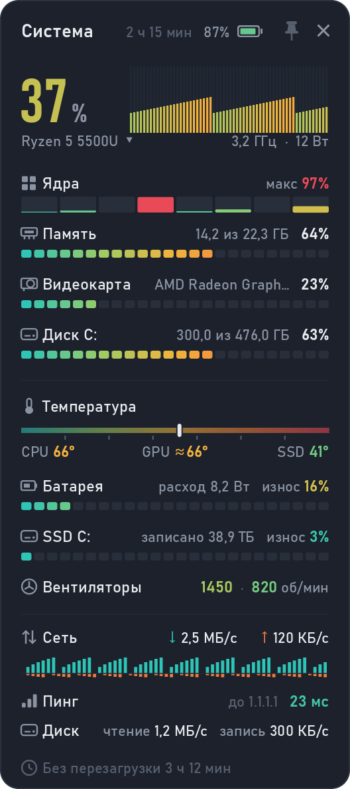
До трёх цифр в трее на цветных квадратах — процессор, температура, память, видеокарта. Наведи — появится карточка с подробностями, нажми — откроется окно. Мини-панель на панели задач показывает такую же карточку.
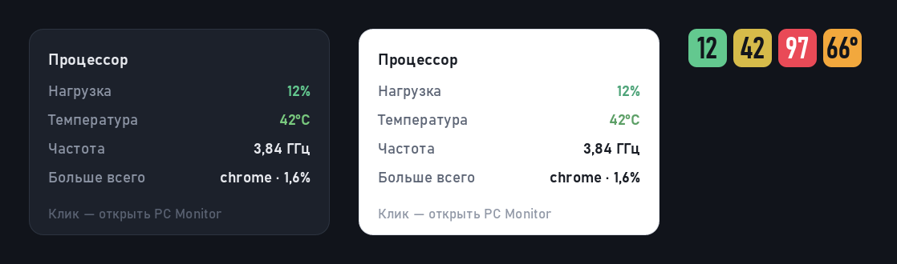
В углу игры — небольшая панель: FPS, 1% low, график времени кадра, где каждое подтормаживание видно красным, нагрузка и температура процессора и видеокарты, видеопамять, частота видеокарты и пинг. Карточка или одна строка, нужные строки, любой угол и размер; Ctrl+Alt+F её прячет. Считаются игры на DirectX 9–12, OpenGL и Vulkan, а клики проходят сквозь панель.
Каждая игра записывается. После неё — отчёт: средний FPS и просадки, подтормаживания, нагрузка и температуры по времени, что ограничивало FPS, твоя заметка, сравнение с другой сессией и CSV с каждым кадром.
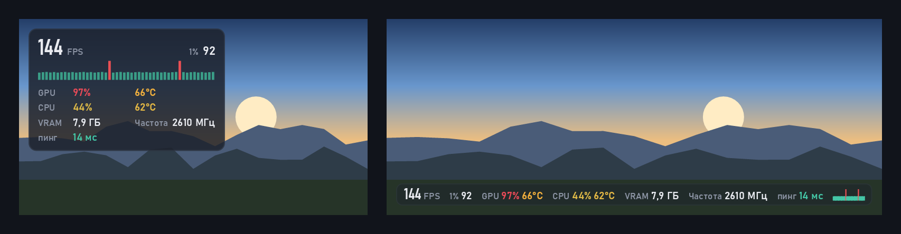
Включи оконный режим или «окно без рамки»: поверх эксклюзивного полноэкранного режима Windows не даёт ничего рисовать.
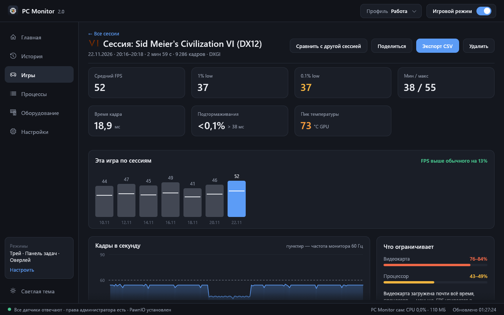
Светлое или тёмное окно. Для виджета: «Карточки» или «Классический», три палитры или два своих цвета, любой размер от 80 до 200%, компактный режим, любая прозрачность; закрепи его на рабочем столе или держи поверх окон. Два профиля, «Работа» и «Игра», у каждого свой вид — «Игра» включается сама, пока ты играешь. Интерфейс на русском, английском, украинском и немецком.
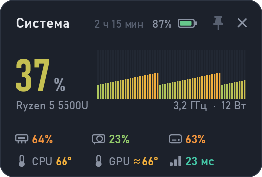
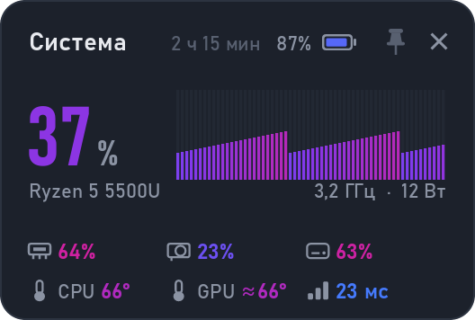
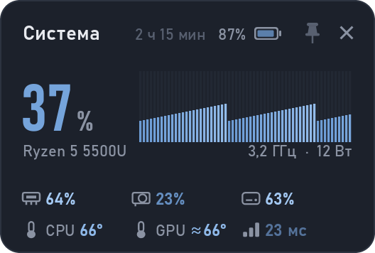
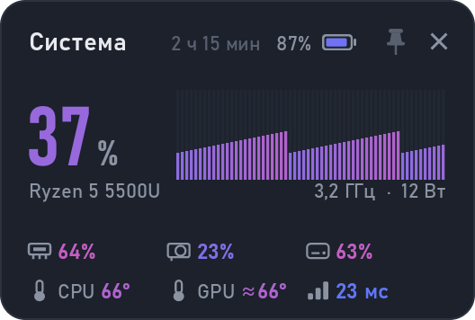
Релизы пока не подписаны цифровой подписью, поэтому Windows SmartScreen может о них предупреждать, а «Интеллектуальное управление приложениями» на свежей Windows 11 — блокировать. Каждый релиз собирает GitHub Actions из помеченного тегом коммита открытого репозитория — ничего не собирается и не подписывается вручную. Авторы изменений, ревьюеры и утверждающие: vladZah403.
Конфиденциальность. PC Monitor никуда не отправляет ничего о тебе и твоём ПК. В интернет он выходит только чтобы спросить у GitHub, нет ли новой версии (раз в 6 часов, можно выключить), скачать её, когда ты нажмёшь «обновить», и пинговать выбранный адрес (по умолчанию 1.1.1.1). Настройки, история и игровые сессии остаются на твоём ПК. Обновления ставятся, только если у них есть подпись релиза.